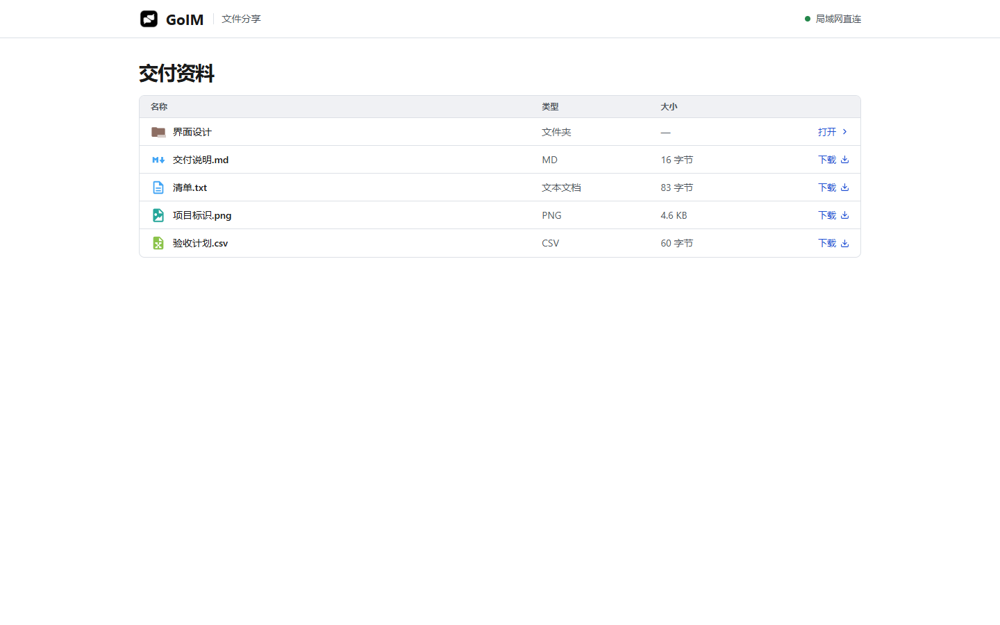

Direct and group chat
Send messages, emoji and pictures, or make a voice call. Conversations are stored locally.
Find nearby teammates, make voice calls, send files and use a shared printer. Chat history stays on each computer.

Send messages, emoji and pictures, or make a voice call. Conversations are stored locally.
Find devices on the same LAN automatically, connect by IP and organize contacts into groups.
Recipients choose which files to accept. Track progress, save a copy or retry from chat or Transfers.
Share a file or folder with a link or QR code. Add a password if needed. Recipients only need a browser.
Check paper sizes, color and duplex support, choose a device and follow your print job.
GoIM recognizes Neiwangtong, IP Messenger and FeiQ. The FAQ lists tested versions and capabilities.
Find shared documents, images and attachments in the file panel while keeping the surrounding conversation in view.

Recipients browse and download from a directory in their browser. Enable the device page to accept uploads by button or drag and drop.

Check availability and paper sizes before submitting a file. Recent prints keeps the job and its status in view.
Install and open GoIM on two computers that can reach each other.
Open Contacts. If discovery is restricted, choose Connect by IP and enter the other computer’s address.
Open the conversation to send text or attach a file. The recipient can accept it directly in chat.
GoIM is an open-source desktop messenger built with Go and Viva. Devices exchange messages and files directly on a local network, including offices and labs that operate without internet access.
GoIM 0.1.17 and the original Neiwangtong 3.4.3055 client have been tested for automatic discovery and two-way exchange of text, images, files and folders in direct and group chats. Direct file transfers over 4 GiB passed in both directions with this version. Individual group files must be smaller than 4 GiB.
Neiwangtong compatibilityKylin and UnionTech UOS desktops can use the Linux compatibility build. Run uname -m: choose amd64 for x86_64 or arm64 for aarch64. On DEB-based systems use the .deb, or extract the full .tar.gz archive.
Use X11 or XWayland with the X11, XKB, Vulkan and ALSA runtimes. Releases cover x64 and ARM64. Linux fixes were tested on Ubuntu with Xvfb. Input methods, multi-monitor setups and individual Kylin or UOS versions still need testing on the actual system.
Linux validation notesIP Messenger 5.9.1 passed automatic discovery, two-way Chinese messaging and file transfers. Windows FeiQ 2013 (3.0.0.2) passed discovery via an explicit loopback address and two-way transfers of Chinese messages and files with Chinese names. Cross-machine FeiQ broadcast discovery still needs verification.
IP Messenger and FeiQ progressOn routed networks, connect by IP. Versions with DNS discovery can also use an internal DNS server and an always-on entry point configured by the administrator. This is off by default.
Cross-subnet setupYes. Add a file or folder under File sharing and send the link. Recipients on the LAN can download it. Enable your device sharing page to accept browser uploads as well.
File sharing guideYes. Devices that can reach each other on the local network can discover peers, chat and transfer files. Each computer keeps its own history. No account is required.
Search history in the conversation and use the conversation files panel for attachments. The Transfers page lists incoming, active and completed files.